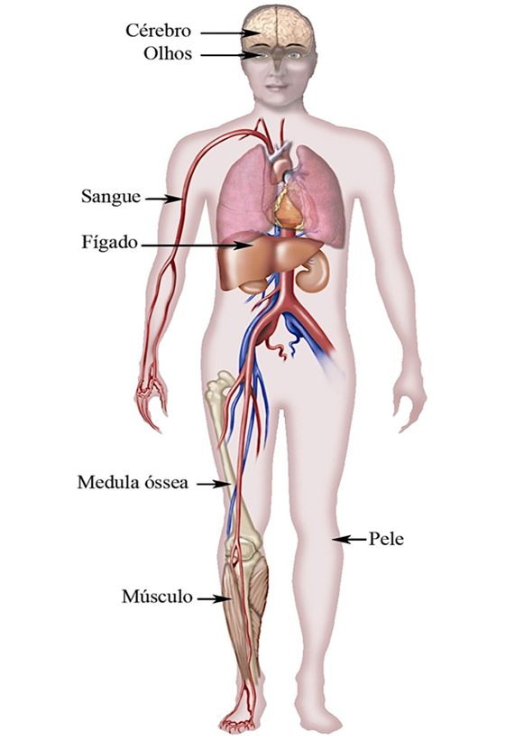

Alguns tecidos de nosso corpo são renovados continuamente. Essa renovação ocorre por meio de células-tronco indiferenciadas, porém elas apresentam um potencial de diferenciação limitado comparado com as células-tronco embrionárias.